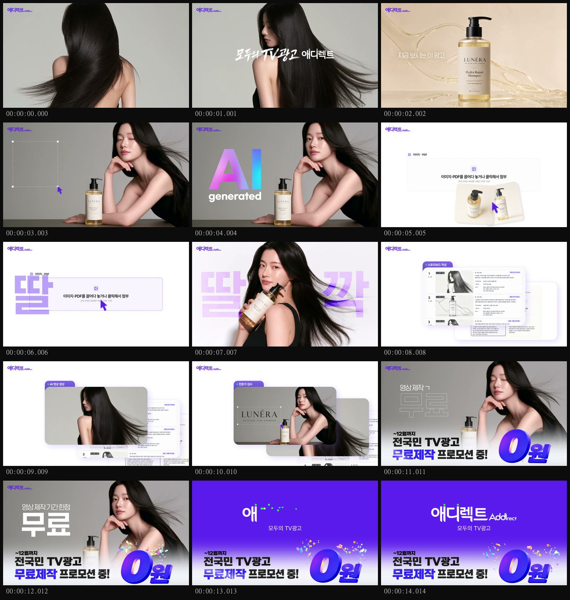
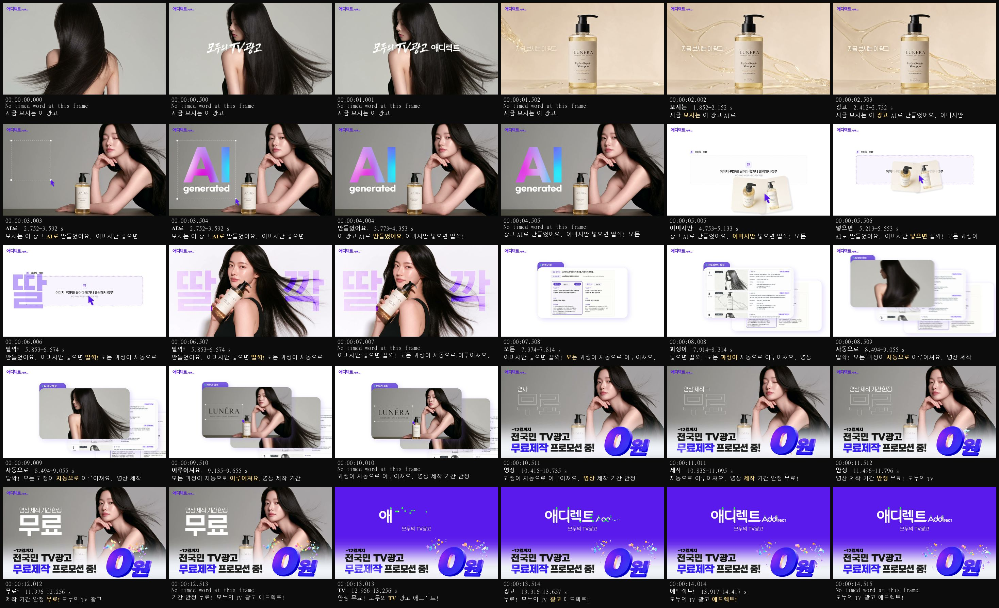
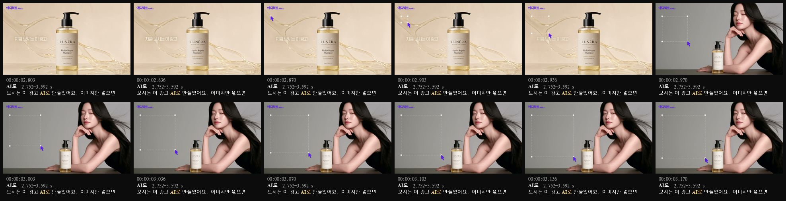
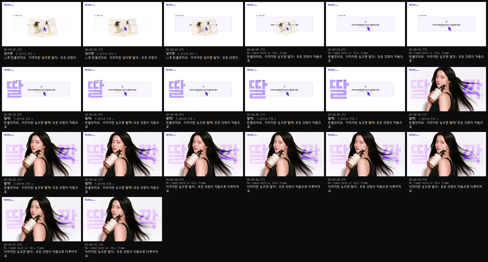
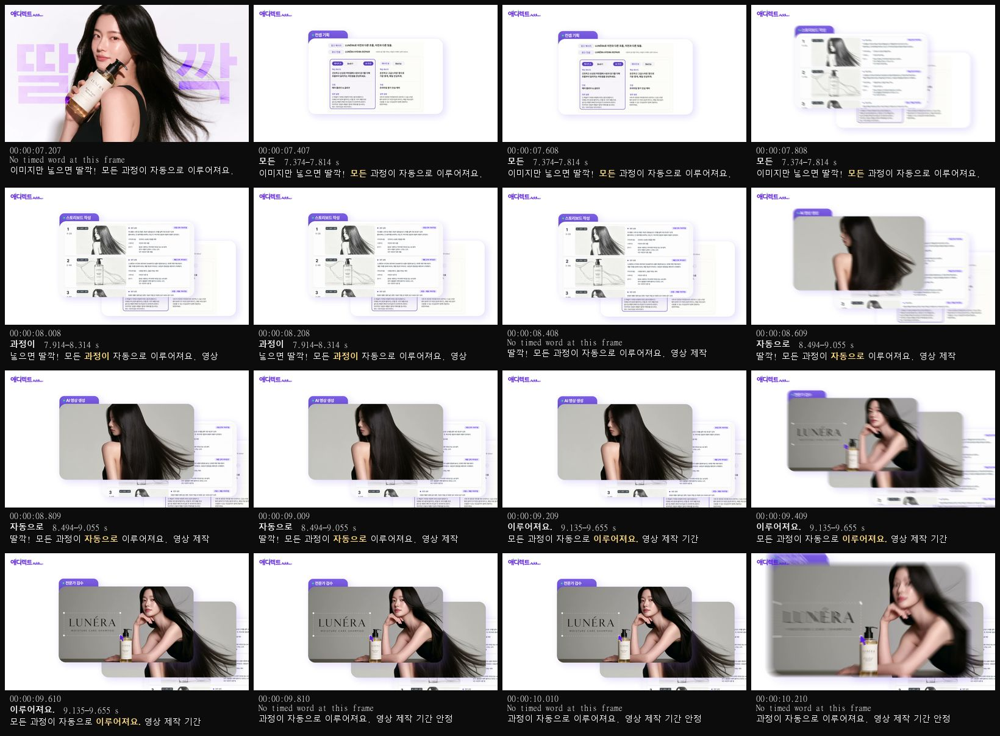
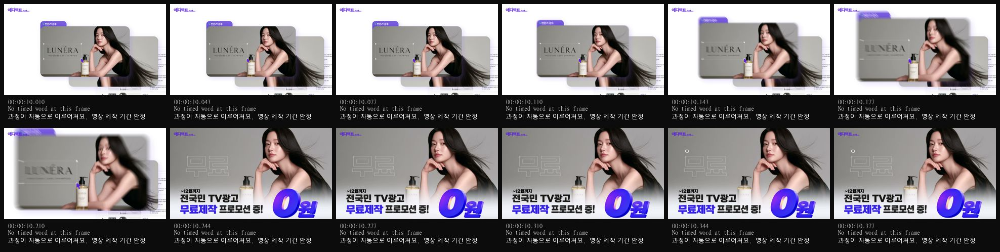
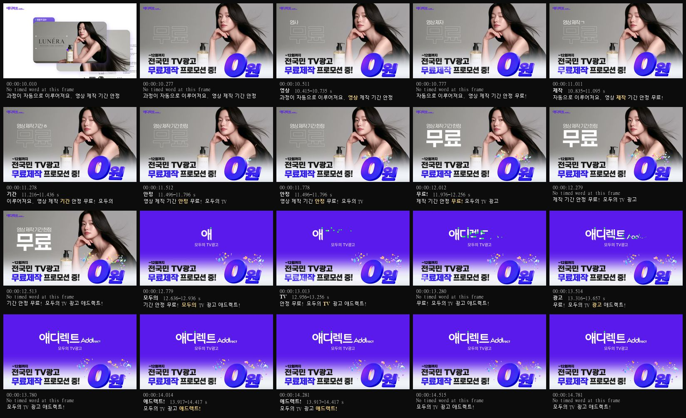
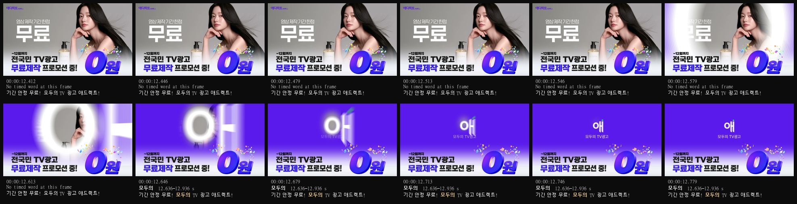
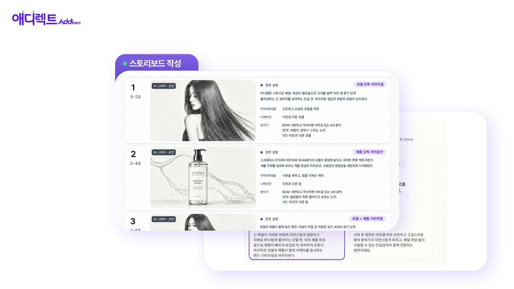
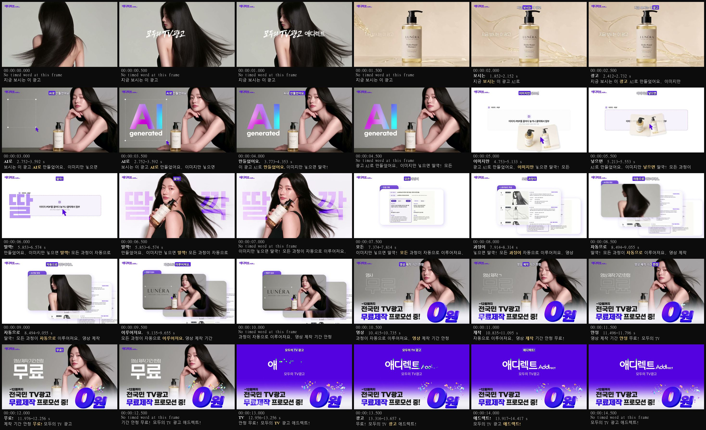

Hypit 0.3.1 · 2026-11-11 · gpu103 로컬 실행
애디렉트 15초 광고를 Hypit 흐름으로 읽고 다시 만든 기록
사용자가 준 애디렉트 「모두의 TV광고」 15초 영상을 Hypit 의 12단계(0–11)로 분석하고, 생성 모델 없이 원본 + 낱말 맞춤 자막으로 다시 렌더했다. 단계마다 따른 스킬 지침(md)과 쓴 명령, 실제 입력과 실제 출력 원문을 둔다. 실행 로그 중 진행 표시와 서버 경로는 뺐다.
- 15.015초 · 1920×1080 · 29.97fps
- 낱말 22개 · 5구간
- 화면 변화 후보 11 → 장면 8
- 요청 7개 모두 로컬
- 유료 요청 0
- 빌드 56초
쉬운 흐름
| 순서 | 단계 | 이번 영상에서 한 일 | 실행 위치 |
|---|---|---|---|
| 1 읽기 | 0–4 | 15초 영상 → 낱말 22개의 시각, 화면 변화 후보 11개, 격자 그림 7장·모든 프레임 격자 10장·원본 해상도 11장 | 로컬 |
| 2 이해하기 | 5 | 에이전트가 자료를 보고 5박자 구성(브랜드 → 메타 훅 → 딸깍 → 자동 과정 → 혜택)과 유지할 관계 7개를 기록 | 에이전트 모델 |
| 3 다시 적기 | 6 | 구조를 영상 코드(SVML)로 옮김. 이번엔 원본 그대로 + 낱말 맞춤 자막 | 에이전트 모델 |
| 4 비용 확인 | 7 | 요청 7개 모두 로컬, 요금 0 | 로컬 |
| 5 만들기 | 8–11 | 빌드 56초, 450프레임 → 15초 1920×1080 영상 + 단어 정렬 22개 | 로컬 (생성 0개) |
데이터가 밖으로 나갈 수 있는 곳은 세 곳이다: 에이전트가 이해하고 적을 때(5·6단계), 음성 인식·정렬을 원격에 맡길 때(2·8단계), 재료를 생성할 때(9단계). 이번에는 첫 번째만 일어났다.
품질 확인 필요
이 기록은 무엇이 뽑히고 어디로 가는지를 보여 준다. 결과가 광고 제작에 쓸 만한지는 아래 항목을 사람이 확인해야 한다.
| 항목 | 이번에 확인한 것 | 확인 방법 |
|---|---|---|
| 받아쓰기 | 22개 중 2개 오인식(「안정」 「애드렉트」), 「딸깍!」 점수 0.47. 대본 정렬은 바른 낱말에 맞게 붙음 | 한국어 광고 여러 편을 사람이 대조 |
| 컷 찾기 | 후보 11개 = 실제 장면 바뀜 7번 + 같은 전환의 중복 4개, 카드 등장 2번은 못 잡음 | 컷·전환이 많은 광고에서 놓친 것·잘못 잡은 것 집계 |
| 판단 기록 | 사람 검토 없음. 배경 소리의 정체, 내레이션이 녹음인지 합성인지 확인 못 함(Hypit 에 소리 듣는 기능 없음) | 제작 담당이 같은 영상을 보고 기록과 비교 |
| 재현 영상 | 렌더는 됨. 1.4–2.97초에는 원본 화면 글자 「지금 보시는 이 광고」와 같은 말이 자막으로 한 번 더 나옴. 광고로 쓸 수준인지 평가 안 함 | 원본과 나란히 놓고 검수 기준으로 평가 |
| 유료 생성 | 실행 안 함(요청 0개) | 비용 승인 후 한 편을 끝까지 생성 |
지침 지도
모든 단계의 출발점은 스킬 SKILL.md 이고, 맨 아래 「Where the current question is answered」 표가 단계별 담당 md 를 가리킨다. 아래 「지침」 칸은 이번에 실제로 읽은 파일이다(경로는 skills/hypit/references/ 아래).
| 단계 | 이름 | 지침(md) | 쓴 기능 |
|---|---|---|---|
| 0 | 원본 가져오기 | (해당 없음 — 파일 직접 받음) | 파일 복사·SHA-256 대조 |
| 1 | 원본 확인 | creation/reference-video.md | hypit media probe |
| 2 | 받아쓰기 | creation/reference-video.md · environment/local-tools.md | hypit runtime use/up · doctor · transcribe --language ko |
| 3 | 화면 변화 후보 | creation/reference-video.md | hypit media boundaries --rate 30 |
| 4 | 프레임 격자 | creation/reference-video.md | hypit media tile · tiles --every-frame --ranges · frames |
| 5 | 판단 기록 | SKILL.md › Understand and adapt · creation/reference-video.md · playbooks/index.md → formats/narration-led-demo.md · craft 4종 | 에이전트 판단 (Hypit 기능 없음) + ffmpeg 음량 측정(보조) |
| 6 | 대본·영상 코드 | production/script-syntax.md · production/media.md (+11/05 코드 재사용) | SVML · SVRun · Recipe 작성 |
| 7 | 검사·계획 | production/builds.md | hypit check · hypit plan |
| 8 | 준비·정렬 | production/media.md | hypit build 안 요청 4개 |
| 9 | 생성 | (이번엔 안 씀) | 요청 0개 |
| 10 | 렌더 | production/rendering.md | hypit build 안 요청 3개 |
| 11 | 내보내기 | production/builds.md | hypit get · inspect --verbose · runtime down · programs down |
단계별 입력과 출력
원본 가져오기
Hypit 밖 외부 전송 없음해당 지침 없음. 링크로 받을 때는 references/production/video-downloads.md 의 hypit download 를 쓴다. 이번에는 사용자가 파일을 직접 줘서 서버로 복사만 했다.
사용자 파일 20261012134955001.mp4 (27,940,874 바이트)
SHA-256 3b34fa82a45599867565189fd1446525c002b1ab4afa48f755ecb0cd34261489 (이 PC)
SHA-256 3B34FA82A45599867565189FD1446525C002B1AB4AFA48F755ECB0CD34261489 (서버 source.mp4)
→ 같은 파일원본 확인
로컬 외부 전송 없음`probe` gives duration, dimensions, frame rate and audio presence;길이·크기·프레임률·소리 유무를 먼저 확인한다.
$ hypit media probe source.mp4$ hypit media probe source.mp4 --json15.015 s 1920×1080 29.97 fps with audio{
"path": "source.mp4",
"duration": 15.015,
"hasVideo": true,
"width": 1920,
"height": 1080,
"frameRate": 29.97,
"hasAudio": true
}받아쓰기
로컬 WhisperX 외부 전송 없음 (HypiHub 로 묶으면 소리 업로드)Pass the reference's spoken language explicitly: `--language zh` for Chinese, `en` for English, `es` for Spanish, or `ko` for Korean.말이 있는 참고 영상은 hypit transcribe 로 낱말 시각을 얻고, 언어를 반드시 지정한다. 로컬 WhisperX 준비는 references/environment/local-tools.md 담당(이번에는 11/05 준비본을 그대로 씀).
CLI 설명: hypit transcribe = 「Establish word times with the WhisperX alignment Endpoint selected by the Runtime Profile.」
$ hypit runtime use .\hypit.runtime.json$ hypit runtime up --max-wait-ms 600000$ hypit doctor$ hypit transcribe source.mp4 --language ko --to transcript.json런타임 프로필(어느 기능을 어느 공급자가 맡는지) — 음성 정렬을 whisperx.local 에 묶어 원격 전송이 없게 함
{"format":"hypit.runtime-local@1","dataRoot":".hypit/runtimes/local",
"credentials":{"local":{"use":"@hypit/credential-store-local"}},
"endpoints":{"media.local":{"use":"@hypit/media-local","config":{"defaultConcurrency":2}},
"html.local":{"use":"@hypit/provider-html-local","config":{"workers":4,"quality":"standard","defaultConcurrency":1,"chromePath":"(서버의 헤드리스 크롬)"}},
"whisperx.local":{"use":"@hypit/provider-whisperx-local","config":{"expectedModel":"large-v3","expectedDevice":"cpu","expectedCompute":"int8","alignmentLanguages":["en","ko"]}}},
"bindings":{"@hypit/whisperx@1#whisperx-alignment":"whisperx.local"}}Transcribing through whisperx.local (@hypit/provider-whisperx-local) · local, no Provider charge
· Checking local transcription service
· Transcribing and aligning words
· Word timing ready
✓ Transcript written
22 words in 5 passages over 15.015s
transcript.json출력 원문 transcript.json (저장 위치만 지움)
{
"format": "hypit.transcript@1",
"source": "source.mp4",
"language": "ko",
"audio_seconds": 15.015,
"passages": [
{
"text": "지금 보시는 이 광고 AI로 만들었어요.",
"start_seconds": 1.612,
"end_seconds": 4.353,
"words": [
{"text":"지금","start_seconds":1.612,"end_seconds":1.772,"score":1},
{"text":"보시는","start_seconds":1.852,"end_seconds":2.152,"score":0.942},
{"text":"이","start_seconds":2.252,"end_seconds":2.312,"score":1},
{"text":"광고","start_seconds":2.412,"end_seconds":2.732,"score":0.836},
{"text":"AI로","start_seconds":2.752,"end_seconds":3.592,"score":0.912},
{"text":"만들었어요.","start_seconds":3.773,"end_seconds":4.353,"score":0.918}
]
},
{
"text": "이미지만 넣으면 딸깍!",
"start_seconds": 4.753,
"end_seconds": 6.574,
"words": [
{"text":"이미지만","start_seconds":4.753,"end_seconds":5.133,"score":0.832},
{"text":"넣으면","start_seconds":5.213,"end_seconds":5.553,"score":0.929},
{"text":"딸깍!","start_seconds":5.853,"end_seconds":6.574,"score":0.47}
]
},
{
"text": "모든 과정이 자동으로 이루어져요.",
"start_seconds": 7.374,
"end_seconds": 9.655,
"words": [
{"text":"모든","start_seconds":7.374,"end_seconds":7.814,"score":0.848},
{"text":"과정이","start_seconds":7.914,"end_seconds":8.314,"score":0.934},
{"text":"자동으로","start_seconds":8.494,"end_seconds":9.055,"score":0.909},
{"text":"이루어져요.","start_seconds":9.135,"end_seconds":9.655,"score":0.607}
]
},
{
"text": "영상 제작 기간 안정 무료!",
"start_seconds": 10.415,
"end_seconds": 12.256,
"words": [
{"text":"영상","start_seconds":10.415,"end_seconds":10.735,"score":0.991},
{"text":"제작","start_seconds":10.835,"end_seconds":11.095,"score":0.828},
{"text":"기간","start_seconds":11.216,"end_seconds":11.436,"score":0.964},
{"text":"안정","start_seconds":11.496,"end_seconds":11.796,"score":0.836},
{"text":"무료!","start_seconds":11.976,"end_seconds":12.256,"score":0.912}
]
},
{
"text": "모두의 TV 광고 애드렉트!",
"start_seconds": 12.636,
"end_seconds": 14.417,
"words": [
{"text":"모두의","start_seconds":12.636,"end_seconds":12.936,"score":0.987},
{"text":"TV","start_seconds":12.956,"end_seconds":13.256,"score":0.946},
{"text":"광고","start_seconds":13.316,"end_seconds":13.657,"score":0.824},
{"text":"애드렉트!","start_seconds":13.917,"end_seconds":14.417,"score":0.928}
]
}
]
}화면 글자와 비교한 오인식: 「안정」→ 화면 「기간한정」, 「애드렉트」→ 화면 「애디렉트」. 「딸깍!」 점수 0.47.
화면 변화 후보
로컬 외부 전송 없음`boundaries` locates abrupt visual changes worth inspecting;갑작스러운 화면 변화 후보를 찾는다. CLI 설명: 「Mechanical adjacent-frame change candidates with scores; never editorial shot labels.」 — 컷 판정은 하지 않는다.
$ source.mp4$ source.mp4 --json설정: 초당 30장, 기준값 기본 0.1
1.333 s score 0.276
2.967 s score 0.306
4.667 s score 0.472
6.333 s score 0.3
7.233 s score 0.283
8.433 s score 0.101
10.2 s score 0.133
10.233 s score 0.198
12.567 s score 0.147
12.6 s score 0.19
12.633 s score 0.16{
"path": "source.mp4",
"sampleRate": 30,
"threshold": 0.1,
"candidates": [
{
"at": 1.333,
"score": 0.276
},
{
"at": 2.967,
"score": 0.306
},
{
"at": 4.667,
"score": 0.472
},
{
"at": 6.333,
"score": 0.3
},
{
"at": 7.233,
"score": 0.283
},
{
"at": 8.433,
"score": 0.101
},
{
"at": 10.2,
"score": 0.133
},
{
"at": 10.233,
"score": 0.198
},
{
"at": 12.567,
"score": 0.147
},
{
"at": 12.6,
"score": 0.19
},
{
"at": 12.633,
"score": 0.16
}
]
}후보 11개를 4단계 모든 프레임 격자로 확인한 판정(에이전트)
| 후보(초) | 점수 | 판정 |
|---|---|---|
| 1.333 | 0.276 | 하드 컷 1.301→1.335 (제목 장면 → 제품 컷) |
| 2.967 | 0.306 | 하드 컷 2.936→2.970, 선택 상자·커서는 컷을 넘어 이어짐 |
| 4.667 | 0.472 | 하드 컷 4.638→4.671 (AI generated → 업로드 화면) |
| 6.333 | 0.300 | 하드 컷 (「깍」 부근, 업로드 화면 → 병 든 인물) |
| 7.233 | 0.283 | 하드 컷 (인물 → 카드 화면) |
| 8.433 | 0.101 | 컷 아님. 「AI 영상 생성」 카드 등장 |
| 10.200 · 10.233 | 0.133 · 0.198 | 한 번의 전환. 카드 사진으로 확대 흐림 → 10.244 컷 |
| 12.567 · 12.600 · 12.633 | 0.147 · 0.190 · 0.160 | 한 번의 전환. 로고 첫 글자 「애」가 크게 날아와 줄어들며 보라 배경으로 |
| (없음) | 0.1 미만 | 놓침: 약 7.8초 「스토리보드 작성」, 약 9.4초 「전문가 검수」 카드가 미끄러져 들어옴 |
프레임 격자
로컬 Hypit 는 보내지 않음 (그림은 5단계에서 에이전트 모델로 감)For a close reading of motion, `frames --every-frame` and `tiles --every-frame` retain every original frame in the selected interval. ... Use `--ranges` with `tiles` to visit several intervals, and `--transcript` to read their word context.넓게(1초·0.5초) → 좁게(0.25·0.1초) → 모든 프레임 순으로 범위·간격을 바꿔 가며 본다. --transcript 로 그때 들리는 낱말을 그림 아래 붙이고, --around 로 특정 말 앞뒤를 연다.
$ hypit media tile source.mp4 --start 0 --end 15 --every 0.5 --columns 6 --transcript transcript.json --to evidence\words_05s.jpg
$ hypit media tiles source.mp4 --ranges io\04_ranges.json --every-frame --columns 6 --rows 2 --cell 320 --transcript transcript.json --to evidence\cuts
$ hypit media tile source.mp4 --around 딸깍! --transcript transcript.json --padding 0.6 --every 0.1 --columns 6 --cell 320 --to evidence\ttalkkak.jpg
$ hypit media tile source.mp4 --start 0 --end 3 --every 0.25 --columns 6 --cell 320 --transcript transcript.json --to evidence\hook.jpg
$ hypit media tile source.mp4 --start 10 --end 15 --every 0.25 --columns 5 --cell 320 --transcript transcript.json --to evidence\endcard.jpg
$ hypit media frames source.mp4 --at 1.0,2.2,4.2,5.2,6.2,8.2,9.2,10.6,11.2,12.3,14.5 --to evidence\full
$ hypit media tile source.mp4 --start 7.2 --end 10.4 --every 0.2 --columns 4 --cell 400 --transcript transcript.json --to evidence\process.jpg범위 파일 04_ranges.json (후보 8곳 ±0.2초)
[
{"id":"c01_1333","start":1.15,"end":1.55},
{"id":"c02_2967","start":2.80,"end":3.20},
{"id":"c03_4667","start":4.50,"end":4.90},
{"id":"c04_6333","start":6.15,"end":6.55},
{"id":"c05_7233","start":7.05,"end":7.45},
{"id":"c06_8433","start":8.25,"end":8.65},
{"id":"c07_1020","start":10.0,"end":10.45},
{"id":"c08_1260","start":12.4,"end":12.85}
]처음 --end 15.015 로 돌렸을 때 「no video frame exists at or after 15 s」로 실패 → 마지막 프레임(14.98초)을 넘지 않게 --end 15 로 다시 실행.
[evidence\words_05s.jpg] exit=0 sec=8.6
evidence\words_05s.jpg
30 labeled frames, 6×5, 480 px cells
0 s 0.5 s 1 s 1.5 s 2 s 2.5 s 3 s 3.5 s 4 s 4.5 s 5 s 5.5 s 6 s 6.5 s 7 s 7.5 s 8 s 8.5 s 9 s 9.5 s 10 s 10.5 s 11 s 11.5 s 12 s 12.5 s 13 s 13.5 s 14 s 14.5 s
[evidence\cuts] exit=0 sec=4
evidence\cuts
10 grids from continuous source decoding
[evidence\ttalkkak.jpg] exit=0 sec=6
evidence\ttalkkak.jpg
20 labeled frames, 6×4, 320 px cells
5.253 s 5.353 s 5.453 s 5.553 s 5.653 s 5.753 s 5.853 s 5.953 s 6.053 s 6.153 s 6.253 s 6.353 s 6.453 s 6.553 s 6.653 s 6.753 s 6.853 s 6.953 s 7.053 s 7.153 s
[evidence\hook.jpg] exit=0 sec=3.6
evidence\hook.jpg
12 labeled frames, 6×2, 320 px cells
0 s 0.25 s 0.5 s 0.75 s 1 s 1.25 s 1.5 s 1.75 s 2 s 2.25 s 2.5 s 2.75 s
[evidence\endcard.jpg] exit=0 sec=6.2
evidence\endcard.jpg
20 labeled frames, 5×4, 320 px cells
10 s 10.25 s 10.5 s 10.75 s 11 s 11.25 s 11.5 s 11.75 s 12 s 12.25 s 12.5 s 12.75 s 13 s 13.25 s 13.5 s 13.75 s 14 s 14.25 s 14.5 s 14.75 s
[evidence\full] exit=0 sec=3.4
evidence\full
11 frames from 1.001 s to 14.5145 s
[evidence\process.jpg] exit=0 sec=5.1
evidence\process.jpg
16 labeled frames, 4×4, 400 px cells
7.2 s 7.4 s 7.6 s 7.8 s 8 s 8.2 s 8.4 s 8.6 s 8.8 s 9 s 9.2 s 9.4 s 9.6 s 9.8 s 10 s 10.2 s








판단 기록
에이전트 모델 (Claude Opus 5.5) 받아쓰기 글·격자 그림·스킬 원문이 에이전트 모델로Record the whole-piece explanation in Analysis and the timed details and their meaning in Timeline as you discover them.전체 해석은 ANALYSIS, 시각별 세부는 TIMELINE, 남은 확인은 PROGRESS 에 적는다.
`ANALYSIS.md` carries the whole-piece model ... `TIMELINE.md` carries time-locatable realization. Organize it into sections named by source-media time and a meaningful phase.사실과 해석을 구분하고, TIMELINE 은 「원본 시각 · 단계 이름」 절로 나눈다.
Read this when independent spoken narration carries a work or substantial passage while products, hands, screens, demonstrations, B-roll, Typography, or MG carry the picture.화면 속 인물은 말하지 않고 화면 밖 목소리가 뼈대 → 「Narration-led work」 형식으로 읽음. 기술 지침은 craft/screen-demonstrations.md · motion-graphics.md · graphic-compositions.md · sound-mix.md 의 도입과 절 제목까지 참고.
Hypit 에는 이 단계를 하는 기능이 없다. 판단은 전부 에이전트 몫이고 Hypit 는 1–4단계 근거와 기록 양식만 준다. 서버에 스킬이 설치돼 있지 않아 공개 저장소 hypit-ai/hypit v0.3.1 의 skills/hypit 원문(71개 파일)을 읽었다.
transcript.json(2단계 출력)- 후보 11개 (3단계 출력)
- 격자 그림 중 에이전트가 실제로 연 것 11장: whole_1s · words_05s · hook · 후보 1.333·2.967·4.667·10.2·12.6 모든 프레임 · ttalkkak · process · endcard
- Hypit 밖 보조 측정: ffmpeg volumedetect — 말 구간 평균 -10.0 dB, 말 없는 구간 -20.4 ~ -23.5 dB, 14.5–15초 -27.6 dB (배경 소리가 끝까지 깔림, 음악·효과음 구분 못 함)
출력 원문 ANALYSIS.md
# ANALYSIS · 애디렉트 「모두의 TV광고」 15초 (20261012134955001.mp4)
- 방법: Hypit 0.3.1 스킬 SKILL.md 「Understand and adapt」 → references/creation/reference-video.md, 형식 references/playbooks/formats/narration-led-demo.md(플레이북 index 「Formats」 표로 선택), 기술 craft/screen-demonstrations.md · craft/motion-graphics.md · craft/graphic-compositions.md · craft/sound-mix.md
- 근거 도구: `hypit media probe` · `hypit transcribe --language ko`(WhisperX large-v3 + 한국어 정렬, CPU) · `hypit media boundaries --rate 30` · `hypit media tile`/`tiles --every-frame`/`frames`(단어 붙은 격자)
- 판단: 스킬 실행 에이전트(Claude Opus 5.5) — Hypit 자체 분석 모델 없음
- 원본: 15.015초 · 1920×1080 · 29.97fps · 소리 있음(스테레오 48kHz) · 받아쓰기 22어절 5구간 · 화면 변화 후보 11개
## 사실(보임·들림)
- 장면 8개, 장면 바뀜 7번: 컷 1.335 · 2.970 · 4.671 · 6.333 · 7.233 · 10.244(확대 흐림 뒤 컷) + 글자 전환 12.579~12.746(로고 첫 글자 「애」가 화면보다 크게 빛나며 날아와 줄어들며 보라 배경으로 넘어감). 8.433 후보는 컷이 아니라 카드 등장, 10.2·10.233 은 한 번의 전환, 12.567~12.633 후보 3개도 한 번의 전환
- boundaries 가 못 잡은 변화: 7.8초 「스토리보드 작성」 카드, 9.4초 「전문가 검수」 카드(카드가 미끄러져 들어와 점수 0.1 미만)
- 인물: 검은 긴 머리 여성 1명, 회색·흰 배경 스튜디오, 말하지 않음(입 모양과 말이 맞는 장면 없음) → 말은 화면 밖 내레이션
- 제품: 「LUNÉRA Hydra Repair Shampoo」 펌프 병(예시 광고의 제품), 1.3초 단독 제품 컷 이후 대부분 장면에 같은 병
- 내레이션(받아쓰기): 「지금 보시는 이 광고 AI로 만들었어요. / 이미지만 넣으면 딸깍! / 모든 과정이 자동으로 이루어져요. / 영상 제작 기간 안정 무료! / 모두의 TV 광고 애드렉트!」 · 화면 글자 기준 오인식 2곳: 「안정」→「한정」, 「애드렉트」→「애디렉트」
- 말 쉼: 4.35→4.75(0.40초) · 6.57→7.37(0.80초, 「딸깍」 뒤) · 9.66→10.42(0.76초) · 12.26→12.64(0.38초) · 말 시작 1.61초, 끝 14.42초
- 소리(Hypit 밖 ffmpeg volumedetect): 말 구간 평균 -10 dB, 말 없는 구간 -20~-24 dB → 말 밑 배경 소리 계속, 14.5~15초 -27.6 dB 로 줄어듦 · 음악·효과음 구분은 못 함
- 화면 글자: 왼쪽 위 「애디렉트 Addirect」 보라 표지 0~12.6초 · 「모두의 TV광고 애디렉트」(0.27~1.33) · 「지금 보시는 이 광고」(1.40~2.97) · 「AI generated」(3.5~4.67) · 업로드 화면 「이미지·PDF를 끌어다 놓거나 클릭해서 첨부 / JPG PNG WEBP HEIC PDF 지원」(4.67~6.33) · 「딸」「깍」(5.87~7.23) · 카드 꼬리표 「컨셉 기획」「스토리보드 작성」「AI 영상 생성」「전문가 검수」(7.23~10.2) · 「영상제작기간한정」「무료」「~12월까지 전국민 TV광고 무료제작 프로모션 중!」「0원」(10.24~15) · 엔드카드 「애디렉트 Addirect」「모두의 TV광고」(12.78~15)
## 해석(하는 일)
- 목표: AI TV광고 제작 서비스 애디렉트를 알리고 「12월까지 무료 제작」 신청을 끌어냄 → 「쉽다·빠르다·공짜다」 세 가지를 15초에 전달
- 구성 5박자: 브랜드 선언(0~1.3, 말 없음) → 메타 훅(1.3~4.7, 「지금 보는 이 광고가 AI 작품」) → 사용법 한 줄(4.7~7.2, 「이미지만 넣으면 딸깍」) → 자동 과정(7.2~10.2, 카드 4장) → 혜택 + 브랜드(10.2~15)
- 핵심 장치 = 광고 자신이 증거: 앞 4.7초의 매끈한 광고 화면(머리 휘날림·제품 컷·인물 컷)을 커서가 선택 상자로 집어 「AI generated」로 덮음 → 「지금 본 것」이 곧 서비스 결과물. 뒤에서 같은 화면이 업로드 재료(5.0초 제품 사진 카드)와 생성 결과(8.6초 「AI 영상 생성」 카드의 머리 휘날림 컷)로 다시 나와 입력 → 결과 순서를 거꾸로 확인시킴
- 형식(narration-led-demo.md 기준): 화면 밖 독립 내레이션이 뼈대, 그림은 내레이션의 「시각적 답」 · 증거 컷 = 생성된 광고 화면, 화면 시연 = 업로드 화면·카드(실제 캡처보다 설명용으로 꾸민 화면, screen-demonstrations.md 의 「관계를 설명하는 연출」) · 큰 타이포가 핵심 낱말만 받침
- 말과 그림 박자: 장면 바뀜이 해당 말보다 0.04~0.18초 먼저(1.335→1.61 글자 1.40, 4.671→4.753, 7.233→7.374, 8.433→8.494, 10.244→10.415, 12.6→12.636) → 그림이 말을 이끔 · 큰 글자는 해당 낱말에 맞춰 뜸(「AI로」 끝 무렵 AI generated, 「딸깍」의 「딸」 5.87·「깍」 컷 6.333, 「무료!」 11.98 에 「무료」 채움)
- 「딸깍」 = 소리말 + 컷 + 큰 글자 + 머리 휘날림이 한 박자 · 뒤 0.8초 쉼으로 결과 컷을 보여 줌(사용이 한 번 클릭이라는 느낌)
- 카드 쌓기(motion-graphics.md 의 「바뀌는 상태」): 같은 틀(흰 바탕·보라 꼬리표·오른쪽 아래로 밀려 쌓임)에 단계만 바뀜, 말 낱말마다 카드 1장(「모든」 컨셉 기획 · 「과정이」 스토리보드 · 「자동으로」 AI 영상 생성 · 「이루어져요」 전문가 검수) → 4단계가 자동으로 흘러가는 느낌
- 연결: 「전문가 검수」 카드 안 사진으로 확대해 들어가 같은 사진이 전체 화면 혜택 장면이 됨(10.1~10.24 매치) · 「모두의 TV광고」가 처음(0.27 손글씨)과 끝(12.78 로고 아래·12.64 말)에 나와 앞뒤를 묶음 · 프로모션 띠는 10.24 부터 장면이 바뀌어도(12.6) 그대로 남아 끝 4.8초 동안 혜택 고정
- 「영상제작기간한정」 작은 글씨가 말에 맞춰 한 글자씩 써짐 → 자막 없이 타이포가 자막 몫, 「무료」만 테두리→채움으로 강조
## 새 방향(다른 서비스·제품·문구로 옮길 때)
- 유지할 관계: ① 첫 1.3초 말 없이 브랜드 문구 손글씨 ② 「지금 보는 이 광고」 + 커서가 화면을 집어 「AI generated」로 뒤집는 메타 훅(4초 안) ③ 입력 하나 → 「딸깍」 소리말·큰 의성어 글자·결과 컷 한 박자 + 0.8초 쉼 ④ 과정 카드 4장, 말 낱말마다 한 장, 같은 틀 ⑤ 앞에서 보여 준 화면을 재료·결과로 다시 등장 ⑥ 카드 속 사진 확대 → 혜택 장면 매치 ⑦ 끝 4.8초 혜택 띠 고정 + 로고 조립 · 그림이 말보다 약 0.1초 먼저
- 다시 설계: 예시 광고의 인물·제품(LUNÉRA 는 예시), 카드 속 화면 내용, 혜택 문구·기한(「~12월까지」 「0원」), 로고 조립 방식, 배경 소리(무엇인지 확인 필요)
- 자막: 원본은 말 자막 없음(타이포가 일부 대신) → 소리 끄고 볼 환경이면 자막 추가 검토
출력 원문 TIMELINE.md
# TIMELINE · 애디렉트 「모두의 TV광고」 15초 (원본 시각 기준)
근거: transcript.json(hypit transcribe --language ko) · evidence/whole_1s.jpg · words_05s.jpg(0.5초, 단어 표시) · hook.jpg(0~3초, 0.25초) · ttalkkak.jpg(--around 「딸깍!」, 0.1초) · process.jpg(7.2~10.4초, 0.2초) · endcard.jpg(10~15초, 0.25초) · cuts/(후보 8곳 모든 프레임) · full/(원본 해상도 11장)
## 0.00–1.33 · 브랜드 선언(말 없음)
- 말: 없음(배경 소리만, 평균 -23.5 dB)
- 화면(사실): 회색 배경, 뒷모습 여성이 머리를 휘날림 → 0.27초부터 흰 손글씨 「모두의 TV광고」가 한 글자씩 써짐(0.27 「모두의 TV과」 → 0.5 「모두의 TV광고」) → 0.77~1.0 오른쪽에 「애디렉트」(고딕) 붙음 → 1.301 까지 유지, 1.335 하드 컷 · 왼쪽 위 보라 「애디렉트 Addirect」 표지 시작(12.6초까지)
- 하는 일(해석): 말 시작 전 1.3초에 브랜드 약속(「모두의 TV광고」)과 고급 광고 느낌을 먼저 세움 → 이 화면이 곧 AI 결과물이라는 뒤 반전의 재료
## 1.33–2.97 · 훅: 「지금 보시는 이 광고」
- 말: 「지금 보시는 이 광고」(1.61–2.73)
- 화면(사실): 베이지 배경 LUNÉRA 샴푸 병 정면 + 흐르는 액체 → 1.40~1.53 왼쪽에 가는 흰 글씨 「지금 보시는 이 광고」가 액체와 함께 나타남(말보다 0.2초 먼저) → 2.87 보라 커서 등장, 2.90~2.94 점선 선택 상자를 끌기 시작
- 하는 일(해석): 시청자가 「지금 보고 있는 것」을 가리켜 다음 말(AI로 만들었다)의 반전을 준비 · 커서가 광고 화면을 편집 도구 안의 대상으로 바꿈
## 2.97–4.67 · 반전: AI generated
- 말: 「AI로」(2.75–3.59) · 「만들었어요.」(3.77–4.35) · 0.40초 쉼
- 화면(사실): 2.970 컷(인물 + 탁자 위 병, 회색 배경) — 선택 상자와 커서가 컷을 넘어 그대로 이어져 계속 커짐(2.97~3.17) → 약 3.5초 상자 자리에 분홍→파랑 그라데이션 큰 글자 「AI」 + 흰 「generated」 → 4.638 까지 유지, 4.671 하드 컷
- 하는 일(해석): 앞의 매끈한 광고 화면 전체가 AI 결과물이라는 「메타 증거」 · 컷을 넘는 선택 상자 = 장면이 바뀌어도 「도구로 고르는 중」이라는 한 동작
## 4.67–6.33 · 사용법: 이미지만 넣으면 딸깍
- 말: 「이미지만」(4.75–5.13) · 「넣으면」(5.21–5.55) · 「딸깍!」(5.85–6.57, 인식 점수 0.47)
- 화면(사실): 4.671 흰 업로드 화면 「이미지·PDF를 끌어다 놓거나 클릭해서 첨부 / JPG PNG WEBP HEIC PDF 지원」 → 약 5.0 「이미지만」에 커서가 제품 사진 카드 2장을 끌고 들어옴 → 5.47~5.67 상자가 연보라로 바뀌며 놓임(받아들임 상태) → 5.87 「딸깍」 첫 소리에 왼쪽 큰 연보라 글자 「딸」
- 하는 일(해석): 입력이 이미지 하나뿐이라는 쉬움을 실제 화면 동작으로 보여 줌 · 놓는 순간과 「딸」이 같은 박자
## 6.33–7.23 · 결과: 「깍」
- 말: 「딸깍!」 끝(–6.57) → 0.80초 쉼
- 화면(사실): 6.333 하드 컷(「깍」 부근) — 흰 배경, 병을 어깨에 든 여성이 머리를 휘날리며 정면 · 왼쪽 「딸」, 오른쪽 「깍」(휘날리는 머리와 함께 흐림 남기며 도착) 큰 연보라 글자가 얼굴을 양쪽에서 감쌈 → 7.207 까지 유지
- 하는 일(해석): 클릭 한 번 → 바로 광고 장면이라는 결과 · 0.8초 말 쉼 동안 결과 화면만 보여 줌
## 7.23–10.24 · 과정: 모든 과정이 자동으로
- 말: 「모든」(7.37–7.81) · 「과정이」(7.91–8.31) · 「자동으로」(8.49–9.06) · 「이루어져요.」(9.14–9.66) · 0.76초 쉼
- 화면(사실): 7.233 컷 흰 배경 → 7.4 「컨셉 기획」 카드(보라 꼬리표, LUNÉRA 광고 컨셉 표) → 약 7.8 「스토리보드 작성」 카드가 왼쪽 위에서 흐림과 함께 들어와 앞 카드 위에 쌓임(장면 1·2·3 그림 + 설명) → 8.433 「AI 영상 생성」 카드(첫 장면의 머리 휘날림 컷) → 약 9.4 「전문가 검수」 카드(LUNÉRA 로고에 점선 선택 상자, 인물+병 사진) → 10.11~10.21 카드 사진 안으로 확대 + 흐림 → 10.244 컷
- 하는 일(해석): 낱말 하나에 카드 하나, 같은 틀에 단계만 바뀌어 4단계가 저절로 흐름 · 「AI 영상 생성」 카드 속 컷이 0초 오프닝 화면 = 앞서 본 광고가 이 과정의 결과라는 회수 · boundaries 는 7.8·9.4 카드 등장을 못 잡음(미끄러짐이라 점수 낮음)
## 10.24–12.58 · 혜택: 영상 제작 기간 한정 무료
- 말: 「영상」(10.42–10.74) · 「제작」(10.84–11.10) · 「기간」(11.22–11.44) · 「안정(한정)」(11.50–11.80) · 「무료!」(11.98–12.26) · 0.38초 쉼
- 화면(사실): 10.244 전체 화면 = 검수 카드 속과 같은 인물+병 사진 · 왼쪽 위 큰 회색 테두리 글자 「무료」 · 하단 흰→보라 그라데이션 띠 「~12월까지 / 전국민 TV광고 / 무료제작 프로모션 중!」 + 오른쪽 입체 보라 「0원」 · 작은 글씨 「영상제작기간한정」이 말에 맞춰 한 글자씩(10.51 「영사」 → 11.01 「영상제작ㄱ」 → 11.28 「영상제작기간ㅎ」 → 11.51 완성) · 11.78 「0원」 주변 색종이 조각 · 12.01 「무료!」에 「무료」가 흰 글자로 채워짐
- 하는 일(해석): 카드 속 결과물로 들어가 그대로 혜택 장면이 되는 매치 · 말 따라 써지는 타이포가 자막 몫 · 「무료」 채움이 말 강조와 같은 박자
## 12.58–15.02 · 엔드카드: 모두의 TV광고 애디렉트
- 말: 「모두의」(12.64–12.94) · 「TV」(12.96–13.26) · 「광고」(13.32–13.66) · 「애드렉트!(애디렉트)」(13.92–14.42) → 끝까지 말 없음, 배경 소리 줄어듦(-27.6 dB)
- 화면(사실): 12.579~12.746 로고 첫 글자 「애」가 화면을 덮을 만큼 크게 빛나며 날아와 줄어들면서 보라 배경으로 넘어감(하단 혜택 띠는 그대로) → 12.78 「애」 + 아래 「모두의 TV광고」 → 13.0~13.5 나머지 글자가 조각처럼 맞춰짐 → 13.78 「애디렉트 Addirect」 완성(말 「애디렉트」보다 0.14초 먼저) → 15초까지 유지
- 하는 일(해석): 처음의 「모두의 TV광고 애디렉트」 손글씨를 로고로 다시 닫음 · 혜택 띠가 장면 전환을 넘어 끝까지 남아 「0원」을 마지막 기억으로 둠
## 끝까지 이어지는 것
- 왼쪽 위 「애디렉트 Addirect」 표지(0~12.58) · 같은 인물·같은 제품(LUNÉRA) · 보라 커서·점선 선택 상자(2.87~4.6, 4.67~5.7, 9.4~10.2) · 연보라·보라 팔레트 · 말 밑 배경 소리(0~15)
- 큰 글자 강조 3번: 「AI generated」(3.5) · 「딸/깍」(5.87·6.33) · 「무료」(10.24 테두리 → 12.01 채움)
- 혜택 띠(10.24~15.02, 장면 전환 넘어 유지)
출력 원문 PROGRESS.md
# PROGRESS
- 현재 질문: 애디렉트 15초 광고의 구조를 Hypit 분석법으로 기록하고, 단계별 입력·출력을 남김
- 완료: probe · transcribe(ko) · boundaries(30장/초) · tile 6장 · tiles --every-frame 후보 8곳 · frames 원본 해상도 11장 · ANALYSIS · TIMELINE
- 남은 확인: 배경 소리의 정체(음악·효과음, 「딸깍」에 클릭 효과음이 있는지) · 내레이션 목소리 성격(사람 녹음·합성 여부) · 7.8·9.4초 카드 등장의 정확한 시작 프레임(`hypit media tiles --every-frame` 필요) · 12.78~13.78 로고 조립의 단계별 프레임
- 다음 행동: 원본 재현 SVML(원본 영상 + 대본 정렬 + 자막)로 check · plan · build 를 돌려 6~11단계 입력·출력 확보, 다른 서비스로 옮길 때는 ANALYSIS 「유지할 관계」 7개를 대본 Selection·Moment 로 옮겨 적기
대본·영상 코드 작성
에이전트 모델 분석 기록과 요청 내용이 에이전트 모델로`이건 3개월 동안 만든 영상이에요.` → Korean word spaces; no space inside `3개월`.한국어 대본은 띄어쓰기를 그대로 쓴다. || 는 자막 덩이 경계, @{이름}…@{/이름} 은 의미 구간(Selection).
WhisperX supplies timed evidence; deterministic alignment associates it with Script.원본을 Normalize → whisperx:Alignment → semantic:Projection 으로 잇는 구조.
틀은 11/05 세럼 재현 코드(serum.svml)를 그대로 쓰고 한국어 자막·16:9 캔버스·보라 강조색만 바꿨다. 대본에는 화면 글자 기준 바른 낱말(「한정」 「애디렉트」)을 적었다.
- ANALYSIS · TIMELINE (5단계 출력)
- 요청: 원본 영상·소리 그대로 + 내레이션 낱말에 맞춘 한국어 자막 (생성 모델 없음, 무료 범위)
v1012.svml
<?svml using="@hypit/markup@1"?>
<!-- 애디렉트 15초 원본 재현(생성 모델 없음): 원본 영상·소리를 그대로 쓰고, 내레이션 단어에 맞춘 한국어 자막만 얹음.
대본은 화면 글자 기준 바른 낱말(한정·애디렉트). 받아쓰기 오인식(안정·애드렉트)과 별개로 정렬이 대본 낱말에 맞춰지는지 확인. -->
<svml>
<import from="@hypit/script@1"/>
<import as="asset" from="@hypit/media@1"/>
<import as="mediaop" from="@hypit/media-operations@1"/>
<import as="whisperx" from="@hypit/whisperx@1"/>
<import as="semantic" from="@hypit/narrative-temporal@1"/>
<import as="narrative-caption" from="@hypit/narrative-caption@1"/>
<import as="time" from="@hypit/timeline-author@1"/>
<import as="visual" from="@hypit/visual-track@1"/>
<import as="audio" from="@hypit/audio-track@1"/>
<import as="caption-fine" from="@hypit/caption-fine@1"/>
<import as="fonts" from="@hypit/fontsource@1"/>
<import as="space" from="@hypit/spatial@1"/>
<import as="film" from="@hypit/film@1"/>
<import as="html" from="@hypit/html-video@1"/>
<import as="recipes" source="./recipes_v1012.svs"/>
<!-- 내레이션(화면 밖 목소리). @{ttalkkak}…@{/ttalkkak} = 「딸깍」 구간, @{offer}…@{/offer} = 혜택 구간 -->
<script id="story">
<ad>
<NARRATOR>지금 보시는 이 광고 || AI로 만들었어요. || 이미지만 넣으면 || @{ttalkkak}딸깍!@{/ttalkkak} || 모든 과정이 || 자동으로 이루어져요. || @{offer}영상 제작 기간 한정 || 무료!@{/offer} || 모두의 TV 광고 || 애디렉트!
</ad>
</script>
<asset:Video id="ad-src" src="./references/v1012/source.mp4"/>
<space:Canvas id="wide" width="1920" height="1080"/>
<time:Clock id="clock" frame-rate="30"/>
<space:Frame id="full-frame" within={wide.bounds} left="0%" top="0%" right="100%" bottom="100%"/>
<mediaop:Normalize id="ad-media" source={ad-src}
video="primary-moving" audio="default" span-authority="video" clock={clock}/>
<whisperx:Alignment id="ad-semantic" narrative={story}
segment={story.segment.ad} media={ad-media.media} domain={ad-media.domain} language="ko"/>
<time:Timeline id="speech" clock={clock} end="ad.end">
<time:Window id="ad" from="start" for={ad-media.extent}/>
</time:Timeline>
<semantic:Projection id="story-time" narrative={story} timeline={speech.timeline}>
<semantic:Map alignment={ad-semantic.alignment} domain={ad-media.domain} window={speech.ad}/>
</semantic:Projection>
<visual:Track id="picture" timeline={speech.timeline}>
<visual:Clip id="ad-clip" media={ad-media.media} during={speech.ad} frame={full-frame} z="0" fit="cover"/>
</visual:Track>
<audio:Track id="mix" timeline={speech.timeline}>
<audio:Clip id="ad-audio" source={ad-media.media} during={speech.ad}/>
</audio:Track>
<fonts:Face id="kr-font" package="@fontsource-variable/noto-sans-kr" weight="800" style="normal"/>
<caption-fine:Style id="caption-style" recipe={recipes.caption.top} font={kr-font}/>
<narrative-caption:Timing id="caption-timing" document={story.caption} binding={story.caption-binding} projection={story-time}/>
<caption-fine:Caption id="captions" document={story.caption} timing={caption-timing}
timeline={speech.timeline} within={wide.bounds}>
<caption-fine:Use style={caption-style}/>
</caption-fine:Caption>
<film:Film id="main" canvas={wide.canvas} timeline={speech.timeline} appearance={recipes.film.wide}>
<film:Track source={picture.visual}/>
<film:Track source={mix.audio}/>
<film:Track source={captions.visual}/>
</film:Film>
<html:Video id="final" composition={main.composition} timeline={speech.timeline}/>
</svml>
v1012.svrun
<?svml using="@hypit/markup/run@1"?>
<svrun version="1">
<author source="./v1012.svml"/>
<target output="final.video"/>
</svrun>
recipes_v1012.svs
<?svml using="@hypit/recipe@1"?>
<sheet version="1">
film.wide { background: #000000; }
caption.top {
stack-order: 70;
x: 0.5;
y: 0.085;
width: 0.7;
height: 0.11;
anchor-x: center;
anchor-y: center;
align: center;
block-align: center;
inline-size: hug;
wrap: word;
max-lines: 1;
max-words-per-line: 6;
line-height: 1.25;
size: 50;
letter-spacing: -0.8;
fill: #FFFFFF;
stroke-color: #1A1033;
stroke-width: 2;
shadow-color: #000000;
shadow-opacity: 0.55;
shadow-x: 0;
shadow-y: 3;
shadow-blur: 8;
background: #00000000;
border-color: #00000000;
border-width: 0;
padding: 0 0;
radius: 0;
karaoke: current;
karaoke-transition: step;
active-fill: #FFFFFF;
active-box: current;
active-box-continuity: isolated;
active-box-background: #5B2EFF;
active-box-border-color: #00000000;
active-box-border-width: 0;
active-box-padding: 4 10;
active-box-radius: 8;
active-box-transition-frames: 2;
active-response: pop;
active-response-frames: 3;
active-scale: 1.03;
lead-frames: 2;
tail-frames: 2;
handoff: cut;
cue-enter: fade;
cue-enter-frames: 2;
cue-exit: fade;
cue-exit-frames: 2;
}
</sheet>
검사와 실행 계획
로컬 외부 전송 없음 (유료 요청이 있으면 여기서 공급자·가격 페이지와 함께 나열)`hypit plan` inspects an authored Run's execution demands.실행 전에 요청 목록·맡는 공급자·요금 표시를 확인한다. 유료 요청이 있으면 비용 승인 범위 안에서만 진행(같은 문서 「Work within the agreed paid scope」).
$ hypit runtime up --max-wait-ms 600000$ hypit check .\v1012.svrun$ hypit plan .\v1012.svrun입력 파일: v1012.svrun → v1012.svml + 런타임 프로필(2단계와 같음)
✓ Run source is valid
Run v1012.svrun
Targets final.video✓ Build plan is valid
Run v1012.svrun
Targets final.video
Requests 7
Local requests 7
Preflight ready
Providers and price pages
@hypit/media-operations#inspect-media
media.local (@hypit/media-local) · local, no Provider charge
×1 request summary unavailable ad-media:inspect
@hypit/media-operations#normalize-media
media.local (@hypit/media-local) · local, no Provider charge
×1 2 inputs produced during Build ad-media:normalize
@hypit/speech-evidence#project-speech-evidence-audio
media.local (@hypit/media-local) · local, no Provider charge
×1 1 audio reference · 2 inputs produced during Build ad-semantic:prepare-evidence-audio
@hypit/whisperx#whisperx-alignment
whisperx.local (@hypit/provider-whisperx-local), bound in the Profile · local, no Provider charge
×1 language ko · 1 audio reference · input produced during Build ad-semantic:request-whisperx
@hypit/media-operations#render-timeline-audio
media.local (@hypit/media-local) · local, no Provider charge
×1 input produced during Build final:request-audio-render
@hypit/media-operations#mux-program-media
media.local (@hypit/media-local) · local, no Provider charge
×1 1 audio + 1 video references · 2 inputs produced during Build final:request-mux
@hypit/html-program#rasterize-visual
html.local (@hypit/provider-html-local) · local, no Provider charge
×1 input produced during Build final:request-visual재료 준비와 단어 정렬
로컬 (빌드 안 요청 4개) 외부 전송 없음 (정렬을 HypiHub 에 맡기면 소리 업로드)The result `opening-semantic.alignment` is `NarrativeAlignment`: Segment and Token boundaries on the named local domain. It carries no media and no Timeline position.정렬 결과는 대본 낱말(토큰)마다 원본 프레임 경계를 단 값이다. 받아쓰기가 낱말을 다르게 적어도 대본 낱말에 맞춰진다(단조 동적 계획법, LLM 아님).
$ hypit build .\v1012.svrun --follow --max-wait-ms 1800000빌드가 이 단계에서 처리한 요청: inspect-media · normalize-media · project-speech-evidence-audio · whisperx-alignment (language ko)
ad-media.extent 값
{"format":"hypit.result-value@1","value":{"frameCount":450,"frameRate":{"denominator":1,"numerator":30}},"resources":[]}받아쓰기(2단계)와 정렬 결과(8단계) 대조 — 정렬은 대본 낱말에 시각을 붙임
| # | 받아쓰기 | 시각(초) | 점수 | 대본 토큰 | 프레임 | 시각(초) | 낱말 |
|---|---|---|---|---|---|---|---|
| 1 | 지금 | 1.61–1.77 | 1 | 지금 | 48–54 | 1.60–1.80 | |
| 2 | 보시는 | 1.85–2.15 | 0.942 | 보시는 | 55–65 | 1.83–2.17 | |
| 3 | 이 | 2.25–2.31 | 1 | 이 | 67–70 | 2.23–2.33 | |
| 4 | 광고 | 2.41–2.73 | 0.836 | 광고 | 72–82 | 2.40–2.73 | |
| 5 | AI로 | 2.75–3.59 | 0.912 | AI로 | 82–108 | 2.73–3.60 | |
| 6 | 만들었어요. | 3.77–4.35 | 0.918 | 만들었어요 | 113–131 | 3.77–4.37 | |
| 7 | 이미지만 | 4.75–5.13 | 0.832 | 이미지만 | 142–155 | 4.73–5.17 | |
| 8 | 넣으면 | 5.21–5.55 | 0.929 | 넣으면 | 156–167 | 5.20–5.57 | |
| 9 | 딸깍! | 5.85–6.57 | 0.47 | 딸깍 | 175–198 | 5.83–6.60 | |
| 10 | 모든 | 7.37–7.81 | 0.848 | 모든 | 221–235 | 7.37–7.83 | |
| 11 | 과정이 | 7.91–8.31 | 0.934 | 과정이 | 237–250 | 7.90–8.33 | |
| 12 | 자동으로 | 8.49–9.05 | 0.909 | 자동으로 | 254–272 | 8.47–9.07 | |
| 13 | 이루어져요. | 9.13–9.65 | 0.607 | 이루어져요 | 274–290 | 9.13–9.67 | |
| 14 | 영상 | 10.41–10.73 | 0.991 | 영상 | 312–323 | 10.40–10.77 | |
| 15 | 제작 | 10.84–11.10 | 0.828 | 제작 | 325–333 | 10.83–11.10 | |
| 16 | 기간 | 11.22–11.44 | 0.964 | 기간 | 336–344 | 11.20–11.47 | |
| 17 | 안정 | 11.50–11.80 | 0.836 | 한정 | 344–354 | 11.47–11.80 | 다름 |
| 18 | 무료! | 11.98–12.26 | 0.912 | 무료 | 359–368 | 11.97–12.27 | |
| 19 | 모두의 | 12.64–12.94 | 0.987 | 모두의 | 379–389 | 12.63–12.97 | |
| 20 | TV | 12.96–13.26 | 0.946 | TV | 388–398 | 12.93–13.27 | |
| 21 | 광고 | 13.32–13.66 | 0.824 | 광고 | 399–410 | 13.30–13.67 | |
| 22 | 애드렉트! | 13.92–14.42 | 0.928 | 애디렉트 | 417–433 | 13.90–14.43 | 다름 |
출력 원문 ad-semantic.alignment → value.json (토큰 22개, 경계 46개)
{"format":"hypit.result-value@1","value":{"boundaries":[
{"frame":0,"id":"segment:ad:start"},
{"frame":48,"id":"segment:ad:token:1:start"},
{"frame":54,"id":"segment:ad:token:1:end"},
{"frame":55,"id":"segment:ad:token:2:start"},
{"frame":65,"id":"segment:ad:token:2:end"},
{"frame":67,"id":"segment:ad:token:3:start"},
{"frame":70,"id":"segment:ad:token:3:end"},
{"frame":72,"id":"segment:ad:token:4:start"},
{"frame":82,"id":"segment:ad:token:4:end"},
{"frame":82,"id":"segment:ad:token:5:start"},
{"frame":108,"id":"segment:ad:token:5:end"},
{"frame":113,"id":"segment:ad:token:6:start"},
{"frame":131,"id":"segment:ad:token:6:end"},
{"frame":142,"id":"segment:ad:token:7:start"},
{"frame":155,"id":"segment:ad:token:7:end"},
{"frame":156,"id":"segment:ad:token:8:start"},
{"frame":167,"id":"segment:ad:token:8:end"},
{"frame":175,"id":"segment:ad:token:9:start"},
{"frame":198,"id":"segment:ad:token:9:end"},
{"frame":221,"id":"segment:ad:token:10:start"},
{"frame":235,"id":"segment:ad:token:10:end"},
{"frame":237,"id":"segment:ad:token:11:start"},
{"frame":250,"id":"segment:ad:token:11:end"},
{"frame":254,"id":"segment:ad:token:12:start"},
{"frame":272,"id":"segment:ad:token:12:end"},
{"frame":274,"id":"segment:ad:token:13:start"},
{"frame":290,"id":"segment:ad:token:13:end"},
{"frame":312,"id":"segment:ad:token:14:start"},
{"frame":323,"id":"segment:ad:token:14:end"},
{"frame":325,"id":"segment:ad:token:15:start"},
{"frame":333,"id":"segment:ad:token:15:end"},
{"frame":336,"id":"segment:ad:token:16:start"},
{"frame":344,"id":"segment:ad:token:16:end"},
{"frame":344,"id":"segment:ad:token:17:start"},
{"frame":354,"id":"segment:ad:token:17:end"},
{"frame":359,"id":"segment:ad:token:18:start"},
{"frame":368,"id":"segment:ad:token:18:end"},
{"frame":379,"id":"segment:ad:token:19:start"},
{"frame":389,"id":"segment:ad:token:19:end"},
{"frame":388,"id":"segment:ad:token:20:start"},
{"frame":398,"id":"segment:ad:token:20:end"},
{"frame":399,"id":"segment:ad:token:21:start"},
{"frame":410,"id":"segment:ad:token:21:end"},
{"frame":417,"id":"segment:ad:token:22:start"},
{"frame":433,"id":"segment:ad:token:22:end"},
{"frame":450,"id":"segment:ad:end"}],"domainId":"ad-media","narrativeId":"story","segment":
{"endBoundaryId":"segment:ad:end","segmentId":"ad","startBoundaryId":"segment:ad:start"},"tokens":[
{"endBoundaryId":"segment:ad:token:1:end","segmentId":"ad","startBoundaryId":"segment:ad:token:1:start","text":"지금","tokenId":"segment:ad:token:1"},
{"endBoundaryId":"segment:ad:token:2:end","segmentId":"ad","startBoundaryId":"segment:ad:token:2:start","text":"보시는","tokenId":"segment:ad:token:2"},
{"endBoundaryId":"segment:ad:token:3:end","segmentId":"ad","startBoundaryId":"segment:ad:token:3:start","text":"이","tokenId":"segment:ad:token:3"},
{"endBoundaryId":"segment:ad:token:4:end","segmentId":"ad","startBoundaryId":"segment:ad:token:4:start","text":"광고","tokenId":"segment:ad:token:4"},
{"endBoundaryId":"segment:ad:token:5:end","segmentId":"ad","startBoundaryId":"segment:ad:token:5:start","text":"AI로","tokenId":"segment:ad:token:5"},
{"endBoundaryId":"segment:ad:token:6:end","segmentId":"ad","startBoundaryId":"segment:ad:token:6:start","text":"만들었어요","tokenId":"segment:ad:token:6"},
{"endBoundaryId":"segment:ad:token:7:end","segmentId":"ad","startBoundaryId":"segment:ad:token:7:start","text":"이미지만","tokenId":"segment:ad:token:7"},
{"endBoundaryId":"segment:ad:token:8:end","segmentId":"ad","startBoundaryId":"segment:ad:token:8:start","text":"넣으면","tokenId":"segment:ad:token:8"},
{"endBoundaryId":"segment:ad:token:9:end","segmentId":"ad","startBoundaryId":"segment:ad:token:9:start","text":"딸깍","tokenId":"segment:ad:token:9"},
{"endBoundaryId":"segment:ad:token:10:end","segmentId":"ad","startBoundaryId":"segment:ad:token:10:start","text":"모든","tokenId":"segment:ad:token:10"},
{"endBoundaryId":"segment:ad:token:11:end","segmentId":"ad","startBoundaryId":"segment:ad:token:11:start","text":"과정이","tokenId":"segment:ad:token:11"},
{"endBoundaryId":"segment:ad:token:12:end","segmentId":"ad","startBoundaryId":"segment:ad:token:12:start","text":"자동으로","tokenId":"segment:ad:token:12"},
{"endBoundaryId":"segment:ad:token:13:end","segmentId":"ad","startBoundaryId":"segment:ad:token:13:start","text":"이루어져요","tokenId":"segment:ad:token:13"},
{"endBoundaryId":"segment:ad:token:14:end","segmentId":"ad","startBoundaryId":"segment:ad:token:14:start","text":"영상","tokenId":"segment:ad:token:14"},
{"endBoundaryId":"segment:ad:token:15:end","segmentId":"ad","startBoundaryId":"segment:ad:token:15:start","text":"제작","tokenId":"segment:ad:token:15"},
{"endBoundaryId":"segment:ad:token:16:end","segmentId":"ad","startBoundaryId":"segment:ad:token:16:start","text":"기간","tokenId":"segment:ad:token:16"},
{"endBoundaryId":"segment:ad:token:17:end","segmentId":"ad","startBoundaryId":"segment:ad:token:17:start","text":"한정","tokenId":"segment:ad:token:17"},
{"endBoundaryId":"segment:ad:token:18:end","segmentId":"ad","startBoundaryId":"segment:ad:token:18:start","text":"무료","tokenId":"segment:ad:token:18"},
{"endBoundaryId":"segment:ad:token:19:end","segmentId":"ad","startBoundaryId":"segment:ad:token:19:start","text":"모두의","tokenId":"segment:ad:token:19"},
{"endBoundaryId":"segment:ad:token:20:end","segmentId":"ad","startBoundaryId":"segment:ad:token:20:start","text":"TV","tokenId":"segment:ad:token:20"},
{"endBoundaryId":"segment:ad:token:21:end","segmentId":"ad","startBoundaryId":"segment:ad:token:21:start","text":"광고","tokenId":"segment:ad:token:21"},
{"endBoundaryId":"segment:ad:token:22:end","segmentId":"ad","startBoundaryId":"segment:ad:token:22:start","text":"애디렉트","tokenId":"segment:ad:token:22"}]},"resources":[]}재료 생성(선택)
외부 유료 이번 실행 요청 0개 — 전송·요금 없음이번 재현은 원본 영상을 그대로 써서 생성 단계를 쓰지 않았다. 사람·제품을 바꾸려면 이 단계에서 craft/image-direction.md · video-direction.md · generated-dependencies.md 지침으로 생성 요청을 쓴다. 영상 참조에는 사람 포함 여부(person-reference)를 반드시 표시해야 하고, 표시가 없으면 업로드 전에 거절된다.
없음
없음
렌더
로컬 (빌드 안 요청 3개) 외부 전송 없음Film assembles the selected contributions with Timeline and Canvas into a Composition. Rendering evaluates that composition over a frame interval and produces the encoded media.영상·소리·자막 트랙을 Film 으로 묶고, HTML 프로그램을 헤드리스 크롬으로 프레임마다 그려 H.264 로 합친다.
빌드가 이 단계에서 처리한 요청: rasterize-visual (450프레임) · render-timeline-audio · mux-program-media
입력: 정규화 영상 · 단어 정렬 · 자막 레시피(caption.top) · 글꼴 Noto Sans KR 800
출력 원문 caption-timing → value.json (자막 낱말 22개의 프레임 구간)
| # | 낱말 | 프레임 | 시각(초) |
|---|---|---|---|
| 1 | 지금 | 48–54 | 1.60–1.80 |
| 2 | 보시는 | 55–65 | 1.83–2.17 |
| 3 | 이 | 67–70 | 2.23–2.33 |
| 4 | 광고 | 72–82 | 2.40–2.73 |
| 5 | AI로 | 82–108 | 2.73–3.60 |
| 6 | 만들었어요 | 113–131 | 3.77–4.37 |
| 7 | 이미지만 | 142–155 | 4.73–5.17 |
| 8 | 넣으면 | 156–167 | 5.20–5.57 |
| 9 | 딸깍 | 175–198 | 5.83–6.60 |
| 10 | 모든 | 221–235 | 7.37–7.83 |
| 11 | 과정이 | 237–250 | 7.90–8.33 |
| 12 | 자동으로 | 254–272 | 8.47–9.07 |
| 13 | 이루어져요 | 274–290 | 9.13–9.67 |
| 14 | 영상 | 312–323 | 10.40–10.77 |
| 15 | 제작 | 325–333 | 10.83–11.10 |
| 16 | 기간 | 336–344 | 11.20–11.47 |
| 17 | 한정 | 344–354 | 11.47–11.80 |
| 18 | 무료 | 359–368 | 11.97–12.27 |
| 19 | 모두의 | 379–389 | 12.63–12.97 |
| 20 | TV | 388–398 | 12.93–13.27 |
| 21 | 광고 | 399–410 | 13.30–13.67 |
| 22 | 애디렉트 | 417–433 | 13.90–14.43 |
{"format":"hypit.result-value@1","value":{"documentId":"story.caption","timelineId":"speech","units":[
{"endFrameExclusive":54,"startFrame":48,"unitId":"story.caption:unit:1"},
{"endFrameExclusive":65,"startFrame":55,"unitId":"story.caption:unit:2"},
{"endFrameExclusive":70,"startFrame":67,"unitId":"story.caption:unit:3"},
{"endFrameExclusive":82,"startFrame":72,"unitId":"story.caption:unit:4"},
{"endFrameExclusive":108,"startFrame":82,"unitId":"story.caption:unit:5"},
{"endFrameExclusive":131,"startFrame":113,"unitId":"story.caption:unit:6"},
{"endFrameExclusive":155,"startFrame":142,"unitId":"story.caption:unit:7"},
{"endFrameExclusive":167,"startFrame":156,"unitId":"story.caption:unit:8"},
{"endFrameExclusive":198,"startFrame":175,"unitId":"story.caption:unit:9"},
{"endFrameExclusive":235,"startFrame":221,"unitId":"story.caption:unit:10"},
{"endFrameExclusive":250,"startFrame":237,"unitId":"story.caption:unit:11"},
{"endFrameExclusive":272,"startFrame":254,"unitId":"story.caption:unit:12"},
{"endFrameExclusive":290,"startFrame":274,"unitId":"story.caption:unit:13"},
{"endFrameExclusive":323,"startFrame":312,"unitId":"story.caption:unit:14"},
{"endFrameExclusive":333,"startFrame":325,"unitId":"story.caption:unit:15"},
{"endFrameExclusive":344,"startFrame":336,"unitId":"story.caption:unit:16"},
{"endFrameExclusive":354,"startFrame":344,"unitId":"story.caption:unit:17"},
{"endFrameExclusive":368,"startFrame":359,"unitId":"story.caption:unit:18"},
{"endFrameExclusive":389,"startFrame":379,"unitId":"story.caption:unit:19"},
{"endFrameExclusive":398,"startFrame":388,"unitId":"story.caption:unit:20"},
{"endFrameExclusive":410,"startFrame":399,"unitId":"story.caption:unit:21"},
{"endFrameExclusive":433,"startFrame":417,"unitId":"story.caption:unit:22"}]},"resources":[]}speech.ad 창 값
{"format":"hypit.result-value@1","value":{"end":{"frame":450,"id":"speech.ad.end","subjectId":"speech.ad","timelineId":"speech"},"id":"speech.ad","span":{"endFrameExclusive":450,"startFrame":0},"start":{"frame":0,"id":"speech.ad.start","subjectId":"speech.ad","timelineId":"speech"},"subjectId":"speech.ad"},"resources":[]}내보내기
로컬 외부 전송 없음`get` exports one named Output to one explicit destination: a Scalar becomes a JSON file; a Resource becomes one streamed file; a Composite becomes a directory containing `value.json` and its referenced Resources.영상은 파일 하나로, 정렬·자막 시각 같은 값은 value.json 폴더로 꺼낸다.
$ hypit get bld_20261111T082016026Z_61FF51E113 --output final.video --to v1012_replica.mp4$ hypit inspect bld_20261111T082016026Z_61FF51E113 --verbose$ hypit get bld_20261111T082016026Z_61FF51E113 --output ad-semantic.alignment --to alignment$ hypit runtime down$ hypit programs down✓ Exported final.video → v1012_replica.mp4✓ Build Result
Build bld_20261111T082016026Z_61FF51E113
Created 2026. 11. 11. 오후 5:20:16
Outcome complete
Targets 1
Available Outputs 14
Execution log hypit logs bld_20261111T082016026Z_61FF51E113
Target final.video · @hypit/blob@1/Blob · resource · video/mp4 · 3320403 bytes
Output ad-media.domain · @hypit/temporal@1/LocalTemporalDomain · composite
Output ad-media.extent · @hypit/temporal@1/TemporalExtent · composite
Output ad-media.media · @hypit/media@1/SynchronizedMedia · composite
Output ad-semantic.alignment · @hypit/narrative-temporal@1/NarrativeAlignment · composite
Output caption-timing · @hypit/caption@1/CaptionTiming · composite
Output captions.visual · @hypit/composition@1/VisualTrack · composite
Output full-frame · @hypit/spatial@1/SpatialFrame · composite
Output main.composition · @hypit/composition@1/Composition · composite
Output mix.audio · @hypit/composition@1/AudioTrack · composite
Output picture.visual · @hypit/composition@1/VisualTrack · composite
Output speech.ad · @hypit/temporal@1/TemporalWindow · composite
Output speech.timeline · @hypit/timeline@1/Timeline · composite
Output story-time · @hypit/narrative-temporal@1/NarrativeProjection · compositefinal.video h264 1920×1080 30fps 450프레임 · aac · 15.000초 · 3,320,403 바이트
밖으로 나간 데이터
| 지점 | 단계 | 나갈 수 있는 데이터 | 이번 실행 |
|---|---|---|---|
| 에이전트 판단·코드 작성 | 5 · 6 | 받아쓰기 글, 격자 그림, 분석 기록, 스킬 원문 | Claude Opus 5.5 로 감 (그림 11장 · transcript · 기록) |
| 음성 인식·정렬 원격 위탁 | 2 · 8 | 소리 파일 업로드, 언어 | 없음 — 로컬 WhisperX 에 묶음 |
| 재료 생성 | 9 | 프롬프트, 설정, 참조 이미지·영상·소리 | 없음 — 요청 0개 |
| 점검·가격 조회 | 7 | 인증된 모델 목록·가격 조회 | 없음 — 로컬 프로필 |